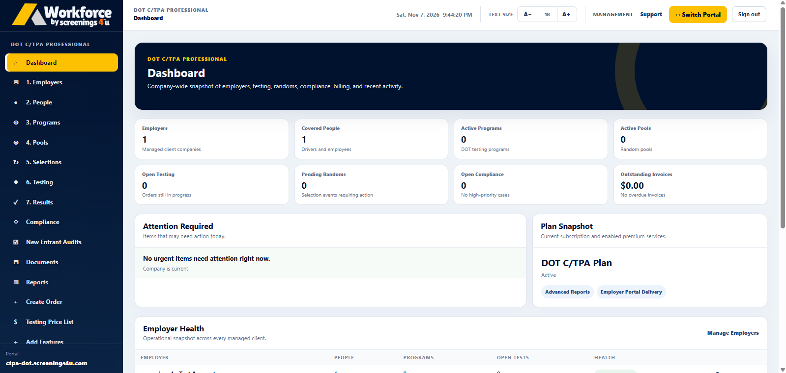

Choose your plan
Select the annual Owner-Operator subscription that fits your operation.
Stay organized with annual FMCSA software plans for single-driver operations. Keep your program details, testing activity, results and compliance records in one accessible workspace.


Get a clear view of your compliance-related activity without juggling spreadsheets, emails and separate files.
A straightforward path from choosing your software plan to using your account.
Select the annual Owner-Operator subscription that fits your operation.
Complete checkout and follow the available account onboarding process.
Access your eligible testing, program and documentation tools.
Annual software subscriptions designed for independent FMCSA owner-operators.
A starting point for a single-driver FMCSA operation.
Additional tools and inclusions for active independent drivers.
Expanded compliance tools for your owner-operator operation.
Plans are billed annually. Individual tests, collections, screenings and related fulfillment services may carry separate charges unless included in the selected plan. Confirm final plan inclusions during checkout.
Answers to help you choose the right annual Workforce subscription.
Yes. Essential, Plus and Complete are annual subscription plans designed for independent owner-operators.
Available features include relevant program records, random pool participation, testing history and documentation. Specific tools depend on your selected subscription.
Plus is listed as a Consortium + Drug Test plan. Exact included services, fulfillment details and any additional charges are confirmed at checkout.
You'll continue to secure checkout and, after completing your purchase, follow the account setup and onboarding process.